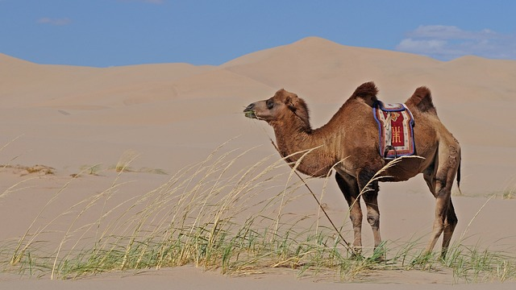

10 Цікавих Фактів про верблюда
1. Максимальна швидкість з якою може бігти верблюд - 16 км/год.
2. За добу верблюд з наїзником може пройти до 80 км.
3. Тіло верблюда дуже добре пристосоване до виживання в пустелях.
4. В горбах верблюда міститься великий запас жиру, який при потребі перетворюється на воду та поживні речовини.
5. Також горб служить захистом від перегрівання тварини під палючим сонцем.
6. У світі є всього два види верблюдів це верблюд одногорбий, якого ще називають аравійським та двогорбий, відомий також як азіатський верблюд.
7. Сьогодні в світі налічується близько 14 мільйонів верблюдів і більшість з них живуть на близькому Сході, в Азії та Австралії.
8. Спраглий верблюд за лічені хвилини може випити до більше ніж сто літрів води.
9. Більшість ссавців страждає від зневоднення при втраті 15% води, а верблюди добре переносять втрату навіть до 25%.
10. В основному верблюди плюються спеціально, і до речі, лише в людей. Якщо верблюда розлютити, то він в секунду витягне із шлунка якусь субстанцію, яка попаде кривдникові прямо в обличчя.
Перейти до наступної тварини